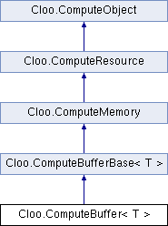

Represents an OpenCL buffer. More...
Inheritance diagram for Cloo.ComputeBuffer< T >:

Public Member Functions | |
| ComputeBuffer (ComputeContext context, ComputeMemoryFlags flags, long count) | |
Creates a new ComputeBuffer. | |
| ComputeBuffer (ComputeContext context, ComputeMemoryFlags flags, long count, IntPtr dataPtr) | |
Creates a new ComputeBuffer. | |
| ComputeBuffer (ComputeContext context, ComputeMemoryFlags flags, T[] data) | |
Creates a new ComputeBuffer. | |
| override string | ToString () |
Gets the string representation of the ComputeBuffer. | |
Static Public Member Functions | |
| static ComputeBuffer< DataType > | CreateFromGLBuffer< DataType > (ComputeContext context, ComputeMemoryFlags flags, int bufferId) |
Creates a new ComputeBuffer from an existing OpenGL buffer object. | |
Detailed Description
template<T>
class Cloo::ComputeBuffer-g< T >
Represents an OpenCL buffer.
- Template Parameters:
-
T The type of the elements of the ComputeBuffer. T is restricted to value types andstructs containing such types.
A memory object that stores a linear collection of bytes. Buffer objects are accessible using a pointer in a kernel executing on a device.
- See also:
- ComputeDevice, ComputeKernel, ComputeMemory
- Type Constraints
-
T : struct
Member Function Documentation
template<T >
| Cloo.ComputeBuffer< T >.ComputeBuffer | ( | ComputeContext | context, | |
| ComputeMemoryFlags | flags, | |||
| long | count | |||
| ) |
Creates a new ComputeBuffer.
- Parameters:
-
context A ComputeContextused to create theComputeBuffer.flags A bit-field that is used to specify allocation and usage information about the ComputeBuffer.count The number of elements of the ComputeBuffer.
template<T >
| Cloo.ComputeBuffer< T >.ComputeBuffer | ( | ComputeContext | context, | |
| ComputeMemoryFlags | flags, | |||
| long | count, | |||
| IntPtr | dataPtr | |||
| ) |
Creates a new ComputeBuffer.
- Parameters:
-
context A ComputeContextused to create theComputeBuffer.flags A bit-field that is used to specify allocation and usage information about the ComputeBuffer.count The number of elements of the ComputeBuffer.dataPtr A pointer to the data for the ComputeBuffer.
template<T >
| Cloo.ComputeBuffer< T >.ComputeBuffer | ( | ComputeContext | context, | |
| ComputeMemoryFlags | flags, | |||
| T[] | data | |||
| ) |
Creates a new ComputeBuffer.
- Parameters:
-
context A ComputeContextused to create theComputeBuffer.flags A bit-field that is used to specify allocation and usage information about the ComputeBuffer.data The data for the ComputeBuffer.
template<T >
| static ComputeBuffer<DataType> Cloo.ComputeBuffer< T >.CreateFromGLBuffer< DataType > | ( | ComputeContext | context, | |
| ComputeMemoryFlags | flags, | |||
| int | bufferId | |||
| ) | [static] |
Creates a new ComputeBuffer from an existing OpenGL buffer object.
- Template Parameters:
-
DataType The type of the elements of the ComputeBuffer. It is recommended, though not required, that T matches the type of the elements in the OpenGL buffer.
- Parameters:
-
context A ComputeContextwith enabled CL/GL sharing.flags A bit-field that is used to specify usage information about the ComputeBuffer. OnlyComputeMemoryFlags.ReadOnly,ComputeMemoryFlags.WriteOnlyandComputeMemoryFlags.ReadWriteare allowed.bufferId The OpenGL buffer object id to use for the creation of the ComputeBuffer.
- Returns:
- The created
ComputeBuffer.
- Type Constraints
-
DataType : struct
template<T >
| override string Cloo.ComputeBuffer< T >.ToString | ( | ) |
Gets the string representation of the ComputeBuffer.
- Returns:
- The string representation of the
ComputeBuffer.
Reimplemented from Cloo.ComputeObject.
The documentation for this class was generated from the following file:
- Cloo/Source/ComputeBuffer.cs
Generated on Mon Aug 30 2010 20:21:26 for Cloo by
 1.7.1
1.7.1